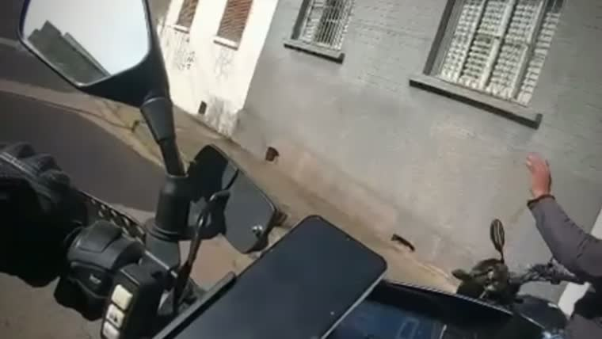
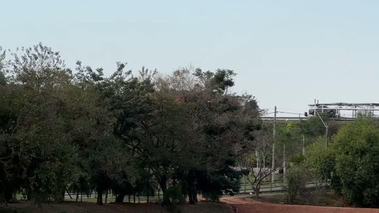
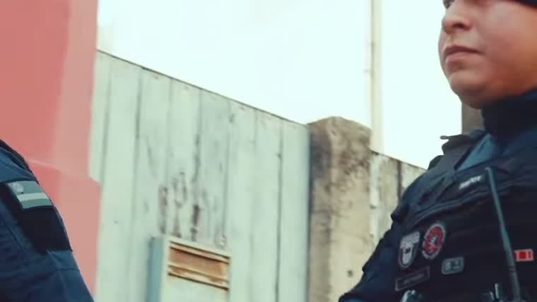
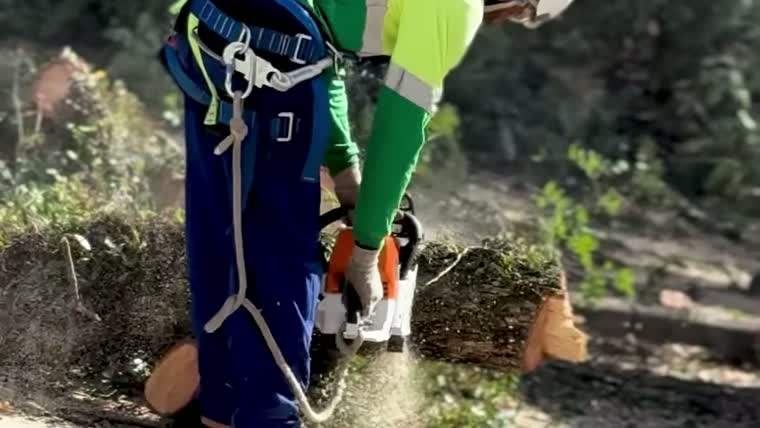
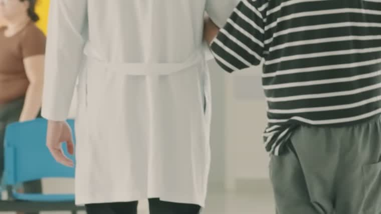

Campanha Temas Diversos · Agosto 2026
Prefeitura de Jundiaí
O calendário de agosto colocou no ar as frentes que a Prefeitura tem em andamento: a segurança pública, com o videomonitoramento e o reconhecimento facial da Guarda Municipal; a revitalização do Parque Botânico do Jardim das Tulipas; a manutenção e a limpeza urbana; a saúde, com as novas unidades e a ampliação de especialidades; a educação; e o atendimento itinerante do Prefeitura na Área. A veiculação correu de 04 a 31 de agosto, em Meta Ads e YouTube.
A peça de segurança foi a que mais fez a cidade responder e a mais compartilhada do mês. A revitalização do Parque Botânico veio logo atrás e foi a que gerou mais comentários.
Distribuição do plano contratado entre as quatro linhas de veiculação, conforme planejamento e orientação do cliente.
| Linha | % do plano | Valor | Meta contratada |
|---|---|---|---|
| Meta Ads · Impressões | 25% | R$2.500,00 | 250.000 |
| Meta Ads · Visualização de vídeo | 30% | R$3.000,00 | 12.000 |
| Meta Ads · Engajamento | 15% | R$1.500,00 | 6.000 |
| YouTube · Visualização | 30% | R$3.000,00 | 12.000 |
| Total | 100% | R$10.000,00 |
As três peças que definiram o ciclo, vistas uma a uma, com o que funcionou, o ponto de atenção, a resposta do público e a leitura de audiência e posicionamento.


Top 3 de vídeo assistido, comentários e compartilhamentos, com o número absoluto e a taxa de cada entrada.
| Peça | Compartilhamentos | Exibições por compartilhamento |
|---|---|---|
| Segurança | 86 | 1.398 |
| Revitalização do Parque Botânico | 27 | 2.686 |
| Segurança V2 | 5 | 7.264 |
Onze peças no ar ao longo do mês, cobrindo segurança, meio ambiente e parques, manutenção urbana, saúde, educação, utilidade pública e atendimento itinerante.
Agosto foi um mês de vitrine ampla. O plano colocou quase todas as áreas da Prefeitura em circulação ao mesmo tempo, com peças de vídeo longo e cartões de serviço. Segurança e parques puxaram o volume e a resposta. Saúde, educação e utilidade pública rodaram em escala menor.





O que cada plataforma registrou no período de 04 a 31 de agosto, apurado direto na fonte de cada uma.
| Métrica | Volume |
|---|---|
| Impressões | 355.149 |
| Alcance da linha de cobertura | 76.645 |
| Frequência | 3,63 |
| Cliques | 514 |
| Engajamento | 75.812 |
| Visualização de vídeo | 16.579 |
No Meta Ads, o Facebook respondeu por 165.317 impressões e o Instagram por 189.832. O Facebook concentrou 73% das interações e três vezes mais vídeo assistido que o Instagram.
| Métrica | Meta | Entregue |
|---|---|---|
| Visualizações | 12.000 | 12.468 |
As visualizações de vídeo das duas plataformas somam as 29.047 registradas no ciclo: 16.579 no Meta Ads e 12.468 no YouTube.
Distribuição das impressões por faixa de idade e por gênero, apurada na plataforma.
Uma parte pequena das exibições chega sem gênero declarado no perfil. Esse grupo aparece separado na leitura.
| Faixa | Feminino | Masculino | Não informado | Total |
|---|---|---|---|---|
| 18 a 24 | 42.675 | 37.438 | 315 | 80.428 |
| 25 a 34 | 35.153 | 37.845 | 159 | 73.157 |
| 35 a 44 | 25.607 | 27.325 | 155 | 53.087 |
| 45 a 54 | 26.241 | 24.765 | 108 | 51.114 |
| 55 a 64 | 30.202 | 21.163 | 65 | 51.430 |
| 65 ou mais | 30.364 | 15.503 | 40 | 45.907 |
| Total | 190.242 | 164.039 | 842 | 355.123 |
A faixa de 18 a 24 anos concentrou o maior volume do mês, com 80.428 impressões, seguida de 25 a 34, com 73.157. A entrega cai de forma gradual conforme a idade sobe, e a faixa de 65 anos ou mais fecha com 45.907. O público feminino recebeu mais impressões que o masculino em quatro das seis faixas, e no total a diferença é de 190.242 contra 164.039.
Cruzamento entre as pautas que a campanha veiculou e o que a imprensa independente de Jundiaí noticiou no mesmo período.
Agosto foi um mês de agenda cheia em Jundiaí, e a imprensa local se concentrou justamente nos temas que a campanha tinha no ar. A pauta de segurança apareceu nos dois canais na mesma semana: enquanto a peça do videomonitoramento circulava, os veículos noticiavam a conclusão das quinze torres do Projeto Sentinela, com reconhecimento facial e monitoramento 24 horas.
Além de segurança, o noticiário do período foi puxado por economia e infraestrutura, com o projeto de data center de 420 MW e a modernização da rede de fibra óptica municipal, e por saúde, com a visita do ministro ao Hospital São Vicente e a chegada da carreta de especialidades.
Estão reproduzidas acima as publicações com título, data, veículo e link conferidos um a um na página de origem. As publicações do canal oficial da Prefeitura ficaram fora deste recorte, porque o que interessa aqui é o que chegou ao morador por terceiros.
Onze peças no ar entre 04 e 31 de agosto, as quatro linhas contratadas cumpridas e uma leitura de quais pautas a cidade acompanha em silêncio e quais fazem o morador responder.
O que a leitura de agosto sugere para o trabalho de comunicação da Prefeitura.
Dados obtidos diretamente da API do Meta Ads e do Google Ads para a campanha de YouTube, com granularidade por campanha, por anúncio, por posicionamento e por tipo de interação, no período de 04 a 31 de agosto de 2026.
Metas por linha conforme planejamento e orientação do cliente para o ciclo de agosto, conferidas uma a uma contra a entrega apurada na plataforma.
Recorte de impressões por idade e por gênero extraído da própria plataforma de mídia. A soma por faixa fica em 355.123 impressões, pequena diferença para o total da conta por causa de registros sem faixa apurada.
Todos os vídeos veiculados foram baixados e assistidos integralmente, com verificação de duração, formato, posicionamento e dispositivo, e os comentários de cada publicação foram lidos um a um antes da análise.
Clipagem dos veículos independentes Tribuna de Jundiaí, Jornal de Jundiaí, JR Jornal da Região e Jundiaí Agora no período, com título, data, veículo e link conferidos na fonte original. As publicações do canal oficial da Prefeitura ficaram fora deste recorte.
Nenhum número deste relatório foi estimado. Cada dado é rastreável à sua fonte original, plataforma de mídia ou publicação de imprensa, e foi conferido antes da publicação. As leituras qualitativas de criativo estão sempre identificadas como tal e separadas dos números apurados.